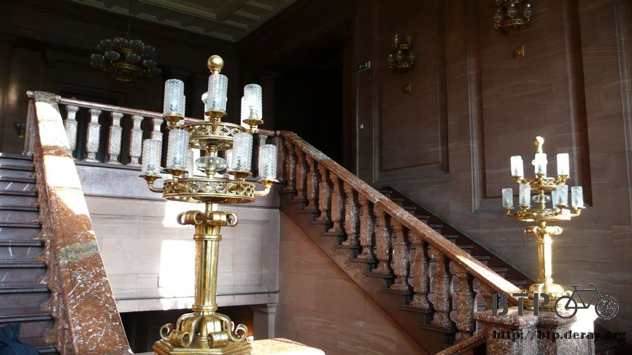
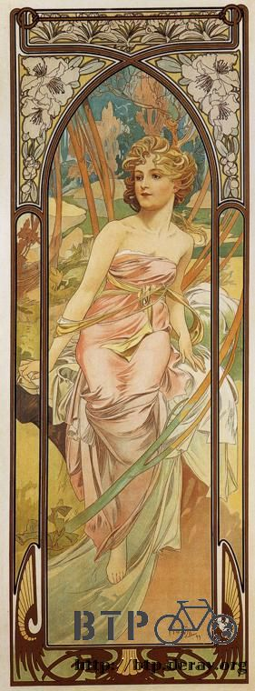
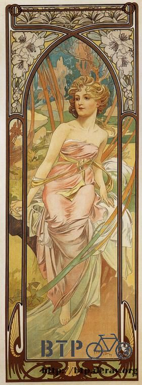
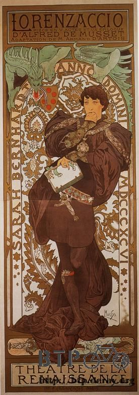
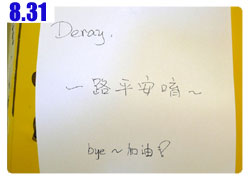

一百年前的MUCHA
昨天去動物園走很多的路，今天又繼續恢復成宅男狀態，唯一的行程就是下午接近傍晚的時候，要去看MUCHA的畫展。
在這之前規畫了接下來從波蘭經過德國往巴黎前進的路線，這次決定不經過荷蘭跟比利時。
其實要走也是可以，這樣會多經過兩個國家，台灣旅行團最喜歡用經過的國家數量作為號召，數量越多感覺越划算，但我不這麼想。
荷蘭跟比利時都是很漂亮的國家，騎單車的話快則兩天，慢則三天就穿越了，這短短的時間並不能好好的遊賞美麗的風景。
與其匆匆一瞥當個臨門過客，不如下次有機會再來好好的遊玩一番。
最末段規劃出來的路線如下：

花一至兩天的時間從波蘭穿越國界進入德國，不進入柏林展開迷路之旅，直接往西南方走，避開所有藍色招牌的高速公路，也許會經過法蘭克福。
從盧森堡的下面進入法國，爬一點點阿爾卑斯山，橫向往西騎進巴黎，如果接下來的路線真的如規劃出來的這麼順利的話，
只剩下短短的一千三百公里而已，比我估計的兩千公里要少很多，不禁讓我懷疑是不是哪邊弄錯了@@"
這段路慢慢騎也只需要兩個星期的時間，如果不因為任何理由而延遲的話，抵達巴黎的時間不會晚於九月十五日。
進入歐洲真是很恐怖的事情，Google Earth一打開全部密密麻麻都是道路，跟之前只有一條路通到底比起來，看得我頭昏眼花。
接下來的路，要不要買地圖都可以，看著指示牌先往柏林，再往法蘭克福，最後往巴黎，分三段路走，運氣好的話也可以抵達。
出發之前的規劃是進入歐洲之後就是享受的開始，旅館到處都有不用流落街頭，治安也穩定，天候亦良好。
只是在節省旅費的原則下，進入歐洲反而變成很難尋找露營的地點，半夜睡到一半被趕走的滋味真是很差，希望別再發生這樣的情況。
另外隨著時序進入九月，歐洲的氣溫也開始直直降，還好不會在這邊停留到冬天。
下午用過餐之後出發去看畫展，宅了一天感覺頭很昏沉。
好天氣連續將近一個星期，希望能保持這樣直到騎進巴黎為止。

搭電車再走一小段路到畫展的城堡去參觀，買學生票只要十元，參觀時間從早上十一點到晚上七點。
原來MUCHA是頂頂有名的大畫家，只有我欠缺常識沒聽過，很幸運可以目睹這位天才畫家百年前的傑作。

不同國家的人唸MUCHA這個名字發音都不一樣，今天就聽到慕夏、慕哈、幕卡，一個人名字好好的被改來改去很奇怪，所以就用原名MUCHA稱呼。
展區是在城堡裡面，非常的典雅，照明的燈飾和整體的建築都很令人感到舒適，參觀的人不多，欣賞作品感覺更自在。
城堡內的大理石樓梯，展區分三個廳，每一個廳進去之前，工作人員都會從票上撕下一個小圓角。

MUCHA是一位很知名的波希米亞畫家，出生於捷克，男性，作品幾乎都是女生，用美麗的線條配上花花草草的背景，畫工很細緻、配色柔和。
以我這個大外行的眼光來看，第一眼覺得像少女漫畫，接著覺得很有日本卡通風格的感覺，尤其很像大友克洋的作品。
但這些作品的年代都是集中在1900年左右，甚至更早期的都有，一百多年前的畫風拿到今天來欣賞，依然是那樣的令人驚艷。
牆壁上的照片就是MUCHA，看起來是留鬍子的大叔，看過他的照片之後再去看他的作品，更會對那細膩的程度讚嘆不已。
MUCHA的自畫像
展場的入口
入口處貼滿了海報，這一張畫似乎是MUCHA的代表作，這次展出兩百幅他的作品，全部看過之後會發現比這幅畫還要值得一看的畫很多。

從這張畫可以看出MUCHA的畫風跟特色，以這樣的風格為基礎繪製了許多令人嘆為觀止的作品。
MUCHA不只有繪畫作品而已，他也畫教堂的壁畫、設計錢幣、勳章、歌劇的海報、甚至餐廳的菜單和熱巧克力的廣告都有。

展區如預計一樣的不能拍照，所以這邊提供一個連結：http://www.abcgallery.com/M/mucha/mucha.html
看網路上的圖片不過癮的話，只要到稍微大間一點的書店也可以買到MUCHA的畫冊，真的是我太少接觸藝術，才沒聽過這位大畫家的名號。
展區也同時販售一些小卡片、月曆等精美的紀念品，不能拍照的時候就非常有買東西的衝動，在這裡買了三張小書籤。
展覽中有一幅畫是1914年他在莫斯科的時候所畫的紅場，畫中可以看見瓦西里大教堂的洋蔥頭建築物，那時候的紅場真的就是貿易市場。
剛從莫斯科過來的我看見這幅畫覺得格外親切，一百年後我也站在同樣的角度欣賞過一樣的景色，只是喧鬧的小販變成了拍照的遊客。
MUCHA畫作的特色就是很大一幅，很多都是長方形的畫框，然後他會在畫紙上畫上更為美麗的外框，畫中的角色感覺都要跳脫畫框、穿越時空走出畫來。
看著這些畫很難相信這居然是人工繪製的，線條那樣的細膩，更令人佩服的是上色的功力，恰如其分的賦予作品生命。
在這邊貼幾張MUCHA的畫作供大家欣賞


 






我很喜歡一幅1886年的畫作，這時候MUCHA才二十六歲，畫中是一位男生摟著女生並且親吻她的額頭，女生一驚慌，手上的飼料就灑了滿地。
這一幅畫不像其它MUCHA著名的畫作那樣有美麗的顏色和構圖，也沒有姿態大方、臉孔姣好的少女，畫作也不過是一幅長寬各十幾公分的小畫。
但它最能打動我的心，駐足欣賞了好久好久。
可惜紀念品區沒有這張畫的相關產品，希望將來可以找到精美的畫冊，能夠隨時看到MUCHA的畫真是一種幸福的享受。
要回宿舍的路上烏雲又開始聚集，這幾天都是這樣，晚上看起來好像要下大雨，白天又恢復成晴朗的好天氣。

明天就要出發繼續這趟旅程，老天爺請繼續賞臉，別吝嗇給個好天氣呀～
繼續閱讀：8.31 告別波蘭

波蘭-茲羅提－ 1：12 台幣
8.30 |
總計：10元 |
MUCHA畫展10元 |
|